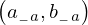

Expression of type Conditional¶
from the theory of proveit.core_expr_types.tuples¶
In [1]:
import proveit
# Automation is not needed when building an expression:
proveit.defaults.automation = False # This will speed things up.
proveit.defaults.inline_pngs = False # Makes files smaller.
%load_expr # Load the stored expression as 'stored_expr'
# import Expression classes needed to build the expression
from proveit import Conditional, ExprRange, IndexedVar, Variable, a, b, n
from proveit.logic import Equals, Forall, InSet
from proveit.numbers import NaturalPos, one
In [2]:
# build up the expression from sub-expressions
sub_expr1 = Variable("_a", latex_format = r"{_{-}a}")
sub_expr2 = IndexedVar(a, sub_expr1)
sub_expr3 = IndexedVar(b, sub_expr1)
sub_expr4 = ExprRange(sub_expr1, sub_expr2, one, n)
sub_expr5 = ExprRange(sub_expr1, sub_expr3, one, n)
expr = Conditional(Forall(instance_param_or_params = [sub_expr4, sub_expr5], instance_expr = Equals([sub_expr4], [sub_expr5]), condition = ExprRange(sub_expr1, Equals(sub_expr2, sub_expr3), one, n)), InSet(n, NaturalPos))
In [3]:
# check that the built expression is the same as the stored expression
assert expr == stored_expr
assert expr._style_id == stored_expr._style_id
print("Passed sanity check: expr matches stored_expr")
In [4]:
# Show the LaTeX representation of the expression for convenience if you need it.
print(stored_expr.latex())
In [5]:
stored_expr.style_options()
In [6]:
# display the expression information
stored_expr.expr_info()
| core type | sub-expressions | expression | |
|---|---|---|---|
| 0 | Conditional | value: 1 condition: 2 | |
| 1 | Operation | operator: 3 operand: 7 | |
| 2 | Operation | operator: 5 operands: 6 |  |
| 3 | Literal |  | |
| 4 | ExprTuple | 7 | |
| 5 | Literal |  | |
| 6 | ExprTuple | 25, 8 |  |
| 7 | Lambda | parameters: 9 body: 10 | |
| 8 | Literal |  | |
| 9 | ExprTuple | 19, 20 |  |
| 10 | Conditional | value: 11 condition: 12 | |
| 11 | Operation | operator: 27 operands: 13 |  |
| 12 | Operation | operator: 14 operands: 15 | |
| 13 | ExprTuple | 16, 17 | |
| 14 | Literal |  | |
| 15 | ExprTuple | 18 | |
| 16 | ExprTuple | 19 |  |
| 17 | ExprTuple | 20 |  |
| 18 | ExprRange | lambda_map: 21 start_index: 24 end_index: 25 | |
| 19 | ExprRange | lambda_map: 22 start_index: 24 end_index: 25 |  |
| 20 | ExprRange | lambda_map: 23 start_index: 24 end_index: 25 | |
| 21 | Lambda | parameter: 34 body: 26 |  |
| 22 | Lambda | parameter: 34 body: 29 |  |
| 23 | Lambda | parameter: 34 body: 30 |  |
| 24 | Literal |  | |
| 25 | Variable |  | |
| 26 | Operation | operator: 27 operands: 28 |  |
| 27 | Literal |  | |
| 28 | ExprTuple | 29, 30 |  |
| 29 | IndexedVar | variable: 31 index: 34 |  |
| 30 | IndexedVar | variable: 32 index: 34 |  |
| 31 | Variable |  | |
| 32 | Variable |  | |
| 33 | ExprTuple | 34 |  |
| 34 | Variable |  |